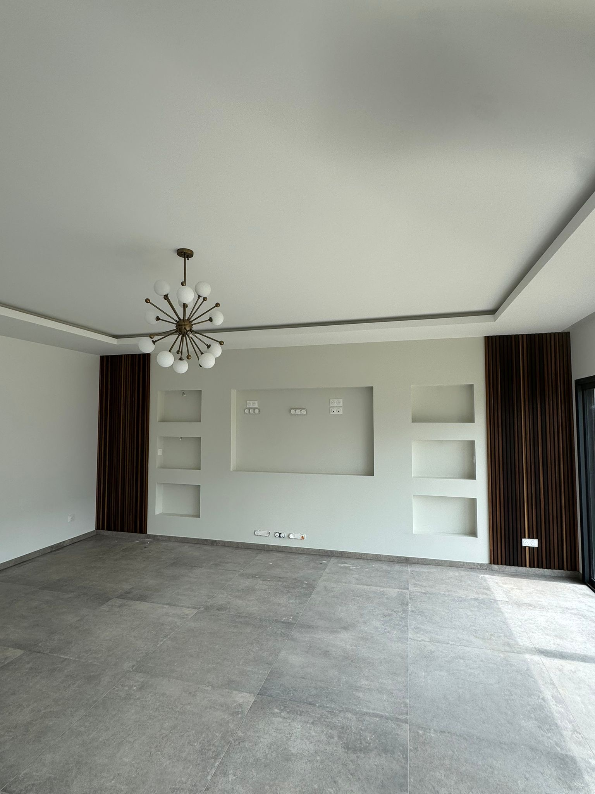
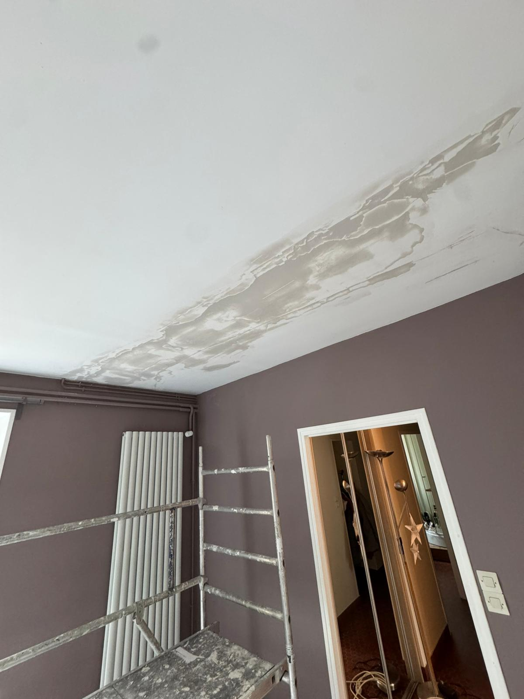
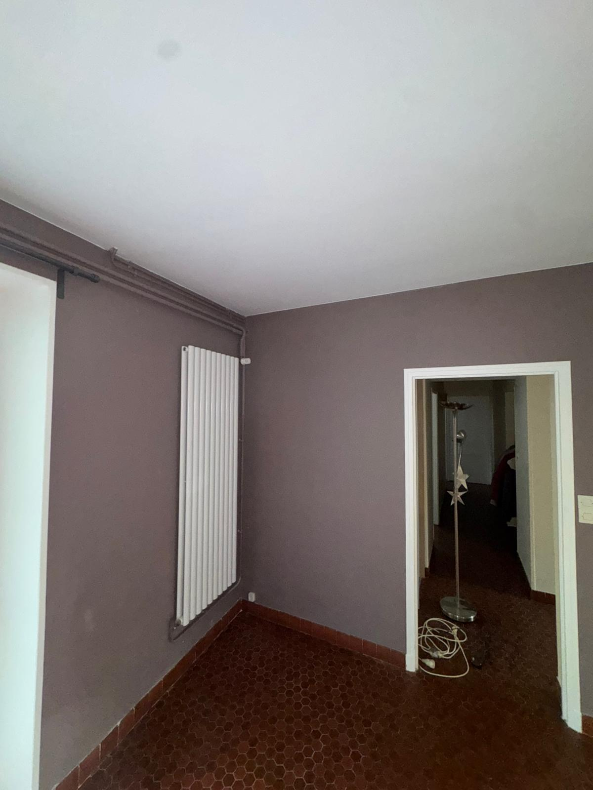
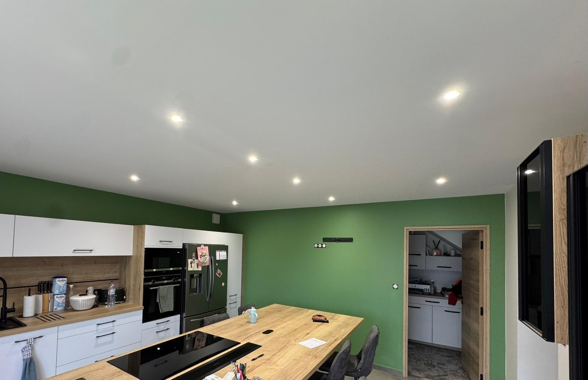
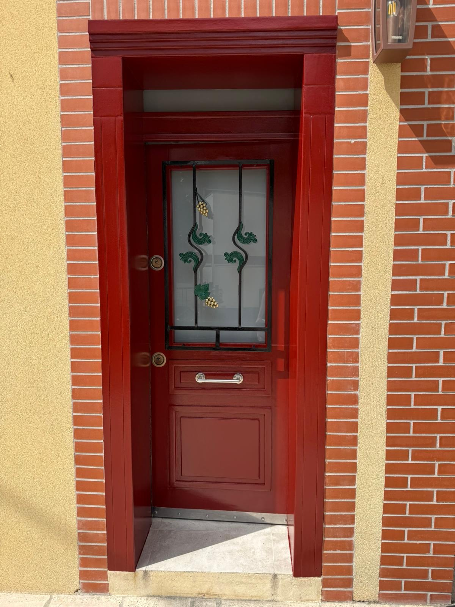
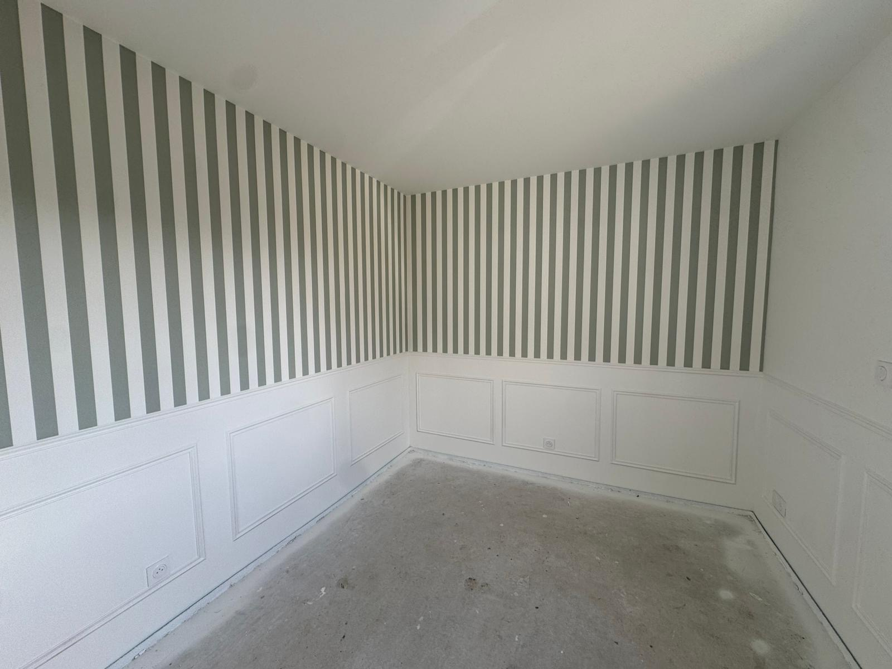
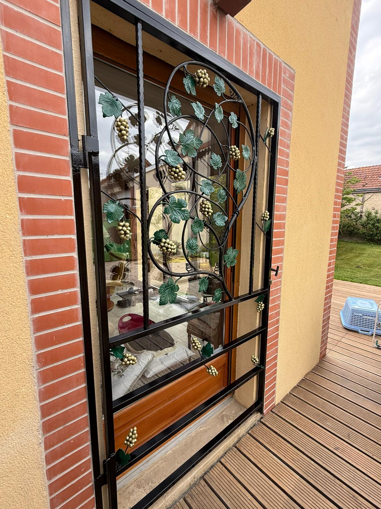
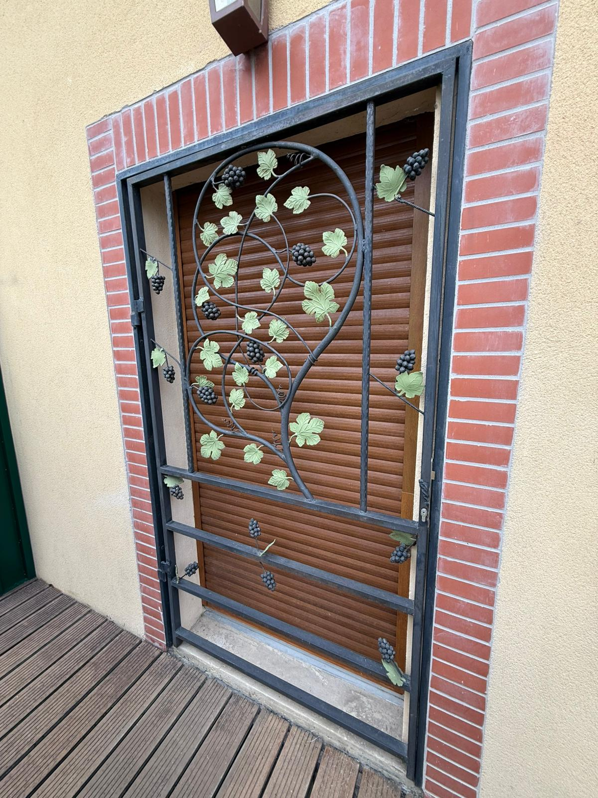

Crugny · 2025

Du mur abîmé au rendu impeccable. Chaque pièce passe par les mêmes trois temps — préparation, application, finition — sans raccourci, sans approximation.
Avant la moindre couche, le mur est ausculté, dépoussiéré, rebouché, ratissé. C'est 60% du chantier — et c'est ce qu'on ne voit pas. Mais c'est ce qui fait que le résultat tient dans le temps.

Ici, mise en impression bloquante suite à un dégât des eaux, rebouchage avec trame et enduit fibré, pour une durée dans le temps maximale. Ces étapes sont indispensables avant de pouvoir accueillir l'enduit et la peinture de finition.

Démasquage soigné, retouches, nettoyage complet de la pièce. On fait le tour ensemble pour valider. Si quelque chose vous chiffonne — même un détail — on reprend. La pièce est livrée prête à vivre.
Cliquez sur un échantillon : la finition juste change tout. Mate pour la profondeur, velours pour la pièce de vie, satinée pour la pratique, laquée pour les boiseries.
L'équilibre parfait entre la profondeur du mate et la lavabilité du satiné. Mon choix par défaut pour les pièces de vie : salons, salles à manger, couloirs. Très belle lumière rasante.




Glissez le curseur. Cette grille en fer forgé à motif de vigne — feuilles et grappes — retrouve tout son éclat après une reprise complète de la peinture. Le souci du détail, jusqu'à la ferronnerie.


Quelques mots de personnes que j'ai eu le plaisir d'accompagner. Si vous souhaitez témoigner après votre chantier, n'hésitez pas — c'est toujours utile.
« Joey a entièrement repeint notre rez-de-chaussée. Travail impeccable, conseils précieux sur les couleurs, et chantier d'une propreté rare. On le recommande sans hésiter. »
« Un vrai professionnel. Devis clair, délais respectés, et un sens du détail qui fait la différence. Il a su gérer un plafond compliqué qui me décourageait depuis des années. »
« Très bon contact dès le premier rendez-vous. Le résultat dépasse nos attentes, particulièrement sur la pose du papier peint panoramique. Merci ! »
Vous ne trouvez pas votre réponse ? Appelez-moi directement au 06.45.26.38.50, je décroche entre deux couches.
Décrivez-moi votre projet en deux lignes. Je vous rappelle sous 24h pour fixer une visite — et je repars avec un devis clair, gratuit, sans engagement.